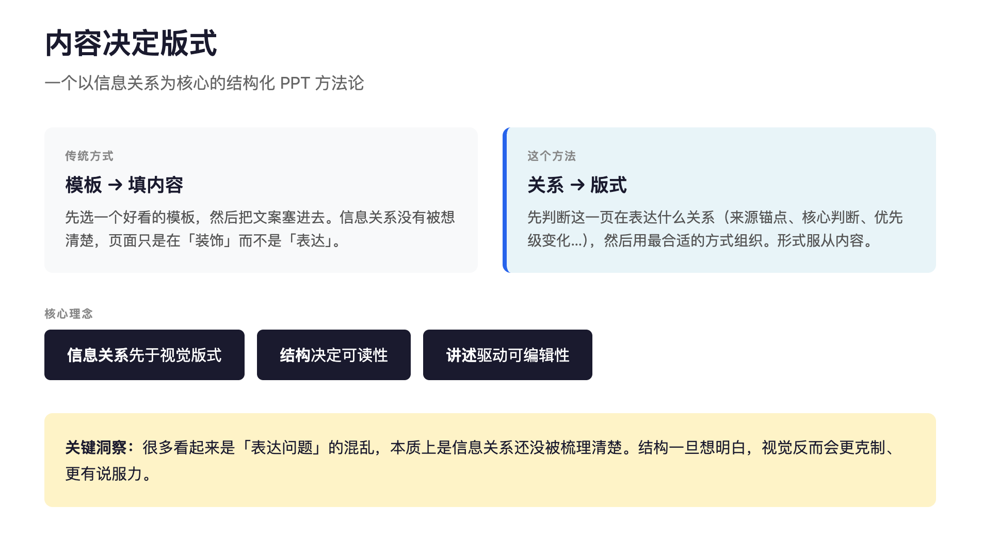

Easy Presentation
Easy Presentation
A workflow and deck system built from a simple premise: information should decide layout, not the other way around.
一个从真实工作场景出发的 deck 系统：先理清信息关系，再决定页面结构与表达方式，而不是先选模板再往里填内容。
I have been making a lot of course decks and presentation slides lately. From gathering material and organizing content to turning everything into something visual and presentable, the real work is information structuring. In the old workflow, that process took too long, and too much willpower was lost to repetitive assembly.
The real job of presentation making is actually quite clear: first clarify the information, then make sure each slide serves the relationship it needs to communicate. Many templates can quickly produce something that looks like a deck, but whether it can truly be understood depends less on visual style than on whether the information structure has been thought through. This project came out of my own working context and frustrations. What I wanted to solve was not how to assemble slides faster, but how to turn long material into a content-driven deck that is clear, speakable, and still editable.
最近做很多的课件和汇报 PPT。从收集材料、整理内容，到最终做成可以演示的视觉化文稿，本质上是一个信息梳理的过程。但按照以往的工作方式，这个过程要花很多时间，意志力也在反复的重复动作里慢慢被消耗掉。
而做 PPT 真正要解决的事情其实很清楚：先把信息理清，再让每一页准确服务它要表达的关系。很多模板能很快给出一种“像演示稿”的形式，但能不能被读懂，往往不取决于页面风格，而是信息关系有没有先被想清楚。这个项目是基于我自己的工作场景和痛点出发，我想解决的不是如何更快地拼一份幻灯片，而是如何把长材料整理成逻辑清楚、适合讲述、也可以继续编辑的内容型 deck。
The core of the project is the idea that content should decide layout. A slide is not built by picking a template first and filling it with text later. It begins by identifying what kind of relationship the page is expressing: is it establishing a source anchor, making a central judgment, showing a shift in priority, setting up a comparison, unfolding a workflow, or bringing a thread to a close? Once those questions are answered, the structure has a reason to exist.
That is why I did not turn it into a library of repeatable fixed styles. Instead, I organized a set of slide archetypes for different information relationships, so each page can be structured in the way that fits its content best.
项目的重心放在“内容决定版式”这件事上。页面不是先选模板再往里填文案，而是先判断这一页在表达什么关系：是在建立来源锚点，还是提出核心判断；是呈现优先级变化，还是做并列对照；是展开一段工作流，还是收束。这些问题先有答案，结构才真正有依据。
所以我没有做成固定样式的重复套用，而是整理出一组对应不同内容关系的 slide archetype，让每一页都能用更合适的方式被组织。
To make this method usable, I built it into a working deck system. It supports web preview and can also export editable .pptx files, so content structuring, layout expression, and final delivery become part of one continuous workflow.
To me, much of what looks like an “expression problem” is actually a structure problem that has not been clarified yet. Once the structure is resolved, the visual layer and the final output can become more restrained and more convincing. That is what matters most in this project, not simply making something complete or polished, but organizing content in a way that can be understood, presented, edited, and reused.
为了让这套方法落地，我把它实现成了一套可以运行的 deck 系统：支持网页预览，也可以导出可编辑的 `.pptx`，让内容整理、版式表达和最终交付变成一条完整的链路。
我觉得，很多看起来是“表达问题”的混乱，本质上是信息关系还没被梳理清楚。结构一旦想明白，视觉和输出反而会更克制，也更有说服力。这也是我做这个项目真正在意的，不是把东西做完整或好看，而是内容怎么被组织、怎么被理解，最后怎么变成一个可以被讲述、被编辑、也被继续使用的成果。
So this is not only a tool, but a concrete form of a working method.
The product is still in an early stage and will continue to evolve through gradual iteration.
所以这不仅仅是一个工具，而是思维方法论的具象化。
产品的形态依然处于初级阶段，后续会逐步迭代和更新。
